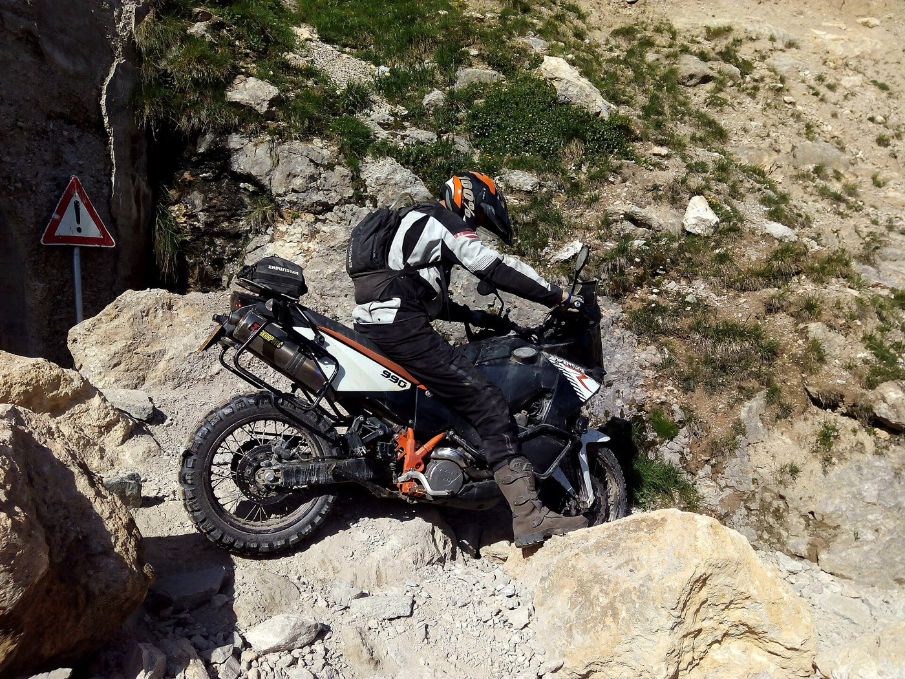

Three ways a ride goes down
- The lowside. Your buddy’s bike is on its side ten yards past him and his lower leg has a new angle. Splint it right and the whole day changes.
- The helmet question. He’s talking, his neck is sore, and everyone has an opinion about the lid. There’s a doctrine for this — it isn’t “just pull it off.”
- July, full gear. Armored jacket, black pants, no shade. Heat illness in riding gear comes on fast and reads as “just tired” until it doesn’t.
Five lessons before the next loop
The full course is fifteen lessons; these five earn a place in your top box first:
- Musculoskeletal Injuries — splinting is the signature rider-down skill
- Spine & Helmets — the helmet decision, taught properly
- Patient Assessment — what to check, in what order, with gloves on
- Heat Illness — riding gear is a wearable greenhouse
- Evacuation — one bar, one partner, forty minutes of trail — do the math right
Then pressure-test it
Interactive scenarios — one decision at a time, tempting mistakes included, debrief at the end:
- The Rider Down — the full scenario this course was built around
- Don’t Sit Him Up — neck pain, storm inbound, move him right
- Two Go, One Stays — when the phone dies mid-call
The certification question, honestly. “Wilderness First Aid” isn’t a regulated credential. No government body defines what a WFA card means — it means whatever the company that printed it says it means. What counts in front of a patient is whether you can do the work. This course teaches the work, free, and issues a record of completion — not a certificate, and we won’t pretend otherwise. If a guide service, race organizer, or employer requires a provider’s card, take their class — you’ll walk in already fluent. If nobody requires you to hold a card, what you need are the skills, not the laminate.
Asked at the gas stop
Should you take a downed rider’s helmet off?
The question is never “helmet on or off?” — it’s “does this helmet help or hurt this patient?” An alert rider with a clear airway can keep the lid on. If the airway is in trouble, it comes off with two people, head held in line, no yanking. Lesson 7 walks the whole decision.
What belongs in a dual-sport first aid kit?
Less than you think, if you know more than most. Gloves, gauze, a pressure wrap, and something rigid to splint with cover the classic rider-down injuries — and half a splint is already on the bike as tools and armor. The kit checklist has the full list.
What if the crash site has no cell coverage?
Then the plan you made at breakfast is the rescue. Someone at home knows your route and your drop-dead time; the group remembers where coverage last existed; and if riders leave for help, two go, one stays, carrying a written note. Evacuation teaches the math before you need it.
What this is
Fifteen lessons, a 40-question knowledge check, sixteen practice scenarios, a printable field reference card, and a kit checklist. Free, no account, nothing recorded about you, source on GitHub. It teaches decision-making, not hands-on skill — practice the hands-on parts on a real, padded, complaining friend.
Other throttle-and-altitude people: ATV & side-by-side riders · overlanders & 4x4 off-roaders · snowmobilers & snowbikers